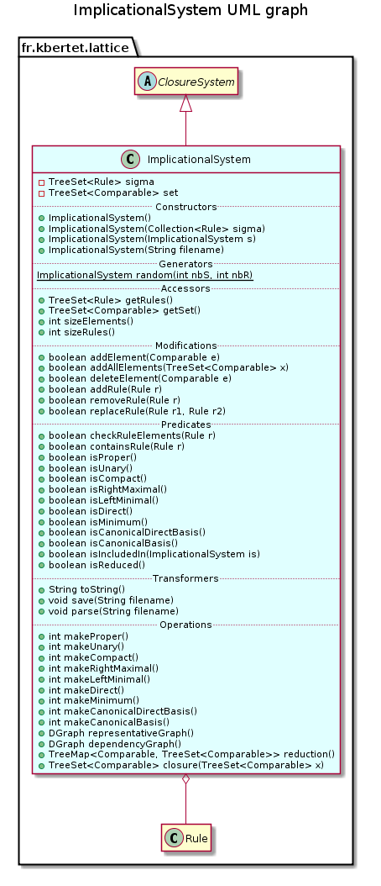

public class ImplicationalSystem extends ClosureSystem
This class gives a representation for an implicational system (ImplicationalSystem), a set of rules.
An ImplicationalSystem is composed of a TreeSet of comparable elements, and a TreeSet of rules defined by class Rule.
This class provides methods implementing classical transformation of an implicational system : make proper, make minimum, make right maximal, make left minimal, make unary, make canonical basis, make canonical direct basis and reduction.
An implicational system owns properties of a closure system, and thus extends the abstract class ClosureSystem and implements methods getSet() and closure(java.util.TreeSet<java.lang.Comparable>).
Therefore, the closed set lattice of an ImplicationalSystem can be generated by invoking method ClosureSystem.closedSetLattice(boolean) of a closure system.
An implicational system can be instancied from and save to a text file in the following format: - a list of elements separated by a space in the first line ; - then, each rule on a line, written like [premise] -> [conclusion] where elements are separated by a space.
a b c d e
a b -> c d
c d -> e

| Constructor and Description |
|---|
ImplicationalSystem()
Constructs a new empty component.
|
ImplicationalSystem(Collection<Rule> sigma)
Constructs this component from the specified set of rules
sigma. |
ImplicationalSystem(ImplicationalSystem is)
Constructs this component as a copy of the specified ImplicationalSystem
is. |
ImplicationalSystem(String filename)
Constructs this component from the specified file.
|
| Modifier and Type | Method and Description |
|---|---|
boolean |
addAllElements(TreeSet<Comparable> x)
Adds the specified element to the set
S of this component. |
boolean |
addElement(Comparable e)
Adds the specified element to the set
S of this component. |
boolean |
addRule(Rule rule)
Adds the specified rule to this component.
|
boolean |
checkRuleElements(Rule rule)
Checks if the set S of this component contains the elements of the specified rule.
|
TreeSet<Comparable> |
closure(TreeSet<Comparable> x)
Builds the closure of a set X of indexed elements.
|
boolean |
containsRule(Rule rule)
Checks if this component already contains the specified rule.
|
boolean |
deleteElement(Comparable e)
Delete the specified element from the set
S of this component and from all the rule containing it. |
DGraph |
dependencyGraph()
Returns the dependency graph of this component.
|
SortedSet<Rule> |
getRules()
Returns the set of rules.
|
SortedSet<Comparable> |
getSet()
Returns the set of indexed elements.
|
ImplicationalSystem |
init()
Initialise the implicational system.
|
boolean |
isCanonicalBasis()
Returns true if this component is equal to its canonical basis.
|
boolean |
isCanonicalDirectBasis()
Returns true if this component is equal to its canonical direct basis.
|
boolean |
isCompact()
Returns true if this component is a compact ImplicationalSystem.
|
boolean |
isDirect()
Returns true if this component is direct.
|
boolean |
isIncludedIn(ImplicationalSystem is)
Compares by inclusion of the proper and unary form of this component with the specified one.
|
boolean |
isLeftMinimal()
Returns true if this component is left minimal.
|
boolean |
isMinimum()
Returns true if this component is minimum.
|
boolean |
isProper()
Returns true if this component is a proper ImplicationalSystem.
|
boolean |
isReduced()
Return true if this component is reduced.
|
boolean |
isRightMaximal()
Returns true if conclusion of rules of this component are closed.
|
boolean |
isUnary()
Returns true if this component is an unary ImplicationalSystem.
|
int |
makeCanonicalBasis()
Replace this component by the canonical basis.
|
int |
makeCanonicalDirectBasis()
Replace this component by its canonical direct basis.
|
int |
makeCompact()
Replaces rules of same premise by only one rule.
|
int |
makeDirect()
Makes this component a compact and direct ImplicationalSystem.
|
int |
makeLeftMinimal()
Makes this component a left minimal and compact ImplicationalSystem.
|
int |
makeMinimum()
Makes this component a minimum and proper ImplicationalSystem.
|
int |
makeProper()
Makes this component a proper ImplicationalSystem.
|
int |
makeRightMaximal()
Replaces conclusion of each rule with their closure without the premise.
|
int |
makeUnary()
Makes this component an unary ImplicationalSystem.
|
ImplicationalSystem |
parse(String filename)
Parse the description of this component from a file whose name is specified.
|
static ImplicationalSystem |
random(int nbS,
int nbR)
Generates a random ImplicationalSystem with a specified number of nodes and rules.
|
TreeMap<Comparable,TreeSet<Comparable>> |
reduction()
Removes from this component reducible elements.
|
boolean |
removeRule(Rule rule)
Removes the specified rule from the set of rules of this component.
|
boolean |
replaceRule(Rule rule1,
Rule rule2)
Replaces the first specified rule by the second one.
|
DGraph |
representativeGraph()
Returns the representative graph of this component.
|
void |
save(String filename)
Save the description of this component in a file whose name is specified.
|
int |
sizeElements()
Returns the number of elements in the set S of this component.
|
int |
sizeRules()
Returns the number of rules of this component.
|
String |
toString()
Returns a string representation of this component.
|
allClosures, closedSetLattice, getReducibleElements, lattice, nextClosure, precedenceGraphpublic ImplicationalSystem()
Constructs a new empty component.
public ImplicationalSystem(Collection<Rule> sigma)
Constructs this component from the specified set of rules sigma.
sigma - the set of rules.public ImplicationalSystem(ImplicationalSystem is)
Constructs this component as a copy of the specified ImplicationalSystem is.
Only structures (conataining reference of indexed elements) are copied.
is - the implicational system to be copiedpublic ImplicationalSystem(String filename) throws IOException
Constructs this component from the specified file.
The file have to respect a certain format:
An implicational system can be instancied from and save to a text file in the following format: - A list of elements separated by a space in the first line ; - then, each rule on a line, written like [premise] -> [conclusion] where elements are separated by a space.
a b c d e
a b -> c d
c d -> e
Each element must be declared on the first line, otherwise, it is not added in the rule Each rule must have a non empty concusion, otherwise, it is not added in the component
filename - the name of the fileIOException - When an IOException occurspublic ImplicationalSystem init()
Initialise the implicational system.
public static ImplicationalSystem random(int nbS, int nbR)
Generates a random ImplicationalSystem with a specified number of nodes and rules.
nbS - the number of nodes of the generated ImplicationalSystemnbR - the number of rules of the generated ImplicationalSystempublic SortedSet<Rule> getRules()
Returns the set of rules.
public SortedSet<Comparable> getSet()
Returns the set of indexed elements.
getSet in class ClosureSystempublic int sizeElements()
Returns the number of elements in the set S of this component.
public int sizeRules()
Returns the number of rules of this component.
public boolean addElement(Comparable e)
Adds the specified element to the set S of this component.
e - the comparable to be addedSpublic boolean addAllElements(TreeSet<Comparable> x)
Adds the specified element to the set S of this component.
x - the treeset of comparable to be addedSpublic boolean deleteElement(Comparable e)
Delete the specified element from the set S of this component and from all the rule containing it.
e - the comparable to be addedSpublic boolean checkRuleElements(Rule rule)
Checks if the set S of this component contains the elements of the specified rule.
rule - the rule to be checkedS contains all the elements of the rulepublic boolean containsRule(Rule rule)
Checks if this component already contains the specified rule.
Rules are compared according to their premise and conclusion
rule - the rule to be testedsigma contains the rulepublic boolean addRule(Rule rule)
Adds the specified rule to this component.
rule - the rule to be addedsigmapublic boolean removeRule(Rule rule)
Removes the specified rule from the set of rules of this component.
rule - the rule to be removedpublic boolean replaceRule(Rule rule1, Rule rule2)
Replaces the first specified rule by the second one.
rule1 - the rule to be replaced by rule2rule2 - the replacing rulepublic String toString()
Returns a string representation of this component.
The following format is used:
An implicational system can be instancied from and save to a text file in the following format: - A list of elements separated by a space in the first line ; - then, each rule on a line, written like [premise] -> [conclusion] where elements are separated by a space.
a b c d e
a b -> c d
c d -> e
public void save(String filename) throws IOException
Save the description of this component in a file whose name is specified.
save in class ClosureSystemfilename - the name of the fileIOException - When an IOException occurspublic ImplicationalSystem parse(String filename) throws IOException
Parse the description of this component from a file whose name is specified.
filename - the name of the fileIOException - When an IOException occurspublic boolean isProper()
Returns true if this component is a proper ImplicationalSystem.
This test is perfomed in O(|Sigma||S|) by testing conclusion of each rule
public boolean isUnary()
Returns true if this component is an unary ImplicationalSystem.
This test is perfomed in O(|Sigma||S|) by testing conclusion of each rule
public boolean isCompact()
Returns true if this component is a compact ImplicationalSystem.
This test is perfomed in O(|Sigma|^2|S|) by testing premises of each pair of rules
public boolean isRightMaximal()
Returns true if conclusion of rules of this component are closed.
This test is perfomed in O(|Sigma||S|) by testing conclusion of each rule
public boolean isLeftMinimal()
Returns true if this component is left minimal.
This test is perfomed in O(|Sigma|^2|S|) by testing conclusions of each pair of rules
public boolean isDirect()
Returns true if this component is direct.
This test is perfomed in O(|Sigma|^2|S|) by testing if closure of the premisse of each conclusion can be obtained by only one iteration on the set of rules.
public boolean isMinimum()
Returns true if this component is minimum.
This test is perfomed in O(|Sigma|^2|S|) by testing if closure of the premisse of each conclusion can be obtained by only one iteration on the set of rules.
public boolean isCanonicalDirectBasis()
Returns true if this component is equal to its canonical direct basis.
The canonical direct basis is computed before to be compare with this component.
This test is performed in O(d|S|), where d corresponds to the number of rules that have to be added by the direct treatment. This number is exponential in the worst case.
public boolean isCanonicalBasis()
Returns true if this component is equal to its canonical basis.
The canonical basis is computed before to be compare with this component.
This treatment is performed in (|Sigma||S|cl) where O(cl) is the computation of a closure.
public boolean isIncludedIn(ImplicationalSystem is)
Compares by inclusion of the proper and unary form of this component with the specified one.
is - another ImplicationalSystempublic int makeProper()
Makes this component a proper ImplicationalSystem.
Elements that are at once in the conclusion and in the premise are deleted from the conclusion. When the obtained conclusion is an empty set, the rule is deleted from this component
This treatment is performed in O(|Sigma||S|).
public int makeUnary()
Makes this component an unary ImplicationalSystem.
This treatment is performed in O(|Sigma||S|)
A rule with a non singleton as conclusion is replaced with a sets of rule, one rule for each element of the conclusion.
This treatment is performed in O(|Sigma||S|).
public int makeCompact()
Replaces rules of same premise by only one rule.
This treatment is performed in O(|sigma|^2|S|)
public int makeRightMaximal()
Replaces conclusion of each rule with their closure without the premise.
This treatment is performed in O(|sigma||S|cl), where O(cl) is the computation of a closure.
public int makeLeftMinimal()
Makes this component a left minimal and compact ImplicationalSystem.
The unary form of this componant is first computed: if two rules have the same unary conclusion, the rule with the inclusion-maximal premise is deleted.
Then, the left-minimal treatment is performed in O(|sigma|^2|S|))
public int makeDirect()
Makes this component a compact and direct ImplicationalSystem.
The unary and proper form of this componant is first computed. For two given rules rule1 and rule2, if the conclusion of rule1 contains the premise of rule1, then a new rule is addes, with rule1.premisse + rule2.premisse - rule1.conclusion as premise, and rule2.conclusion as conlusion. This treatment is performed in a recursive way until no new rule is added.
This treatment is performed in O(d|S|), where d corresponds to the number of rules that have to be added by the direct treatment, that can be exponential in the worst case.
public int makeMinimum()
Makes this component a minimum and proper ImplicationalSystem.
A rule is deleted when the closure of its premisse remains the same even if this rule is suppressed.
This treatment is performed in O(|sigma||S|cl) where O(cl) is the computation of a closure.
public int makeCanonicalDirectBasis()
Replace this component by its canonical direct basis.
The proper, unary and left minimal form of this component is first computed, before to apply the recursive directe treatment, then the left minimal treatment.
This treatment is performed in O(d), where d corresponds to the number of rules that have to be added by the direct treatment. This number is exponential in the worst case.
public int makeCanonicalBasis()
Replace this component by the canonical basis.
Conclusion of each rule is first replaced by its closure. Then, premise of each rule r is replaced by its closure in ImplicationalSystem \ rule. This treatment is performed in (|Sigma||S|cl) where O(cl) is the computation of a closure.
public DGraph representativeGraph()
Returns the representative graph of this component.
Nodes of the graph are attributes of this components. For each proper rule X+b->a, there is an {X}-valuated edge from a to b. Notice that, for a rule b->a, the edge from a to b is valuated by emptyset. and for the two rules X+b->a and Y+b->a, the edge from a to b is valuated by {X,Y}.
public DGraph dependencyGraph()
Returns the dependency graph of this component.
Dependency graph of this component is the representative graph of the canonical direct basis. Therefore, the canonical direct basis has to be generated before to compute its representativ graph, and this treatment is performed in O(d), as for the canonical direct basis generation, where d corresponds to the number of rules that have to be added by the direct treatment. This number is exponential in the worst case.
public TreeMap<Comparable,TreeSet<Comparable>> reduction()
Removes from this component reducible elements.
Reducible elements are elements equivalent by closure to others elements. They are computed by getReducibleElements of ClosureSystem in O(O(|Sigma||S|^2)
public boolean isReduced()
Return true if this component is reduced.
public TreeSet<Comparable> closure(TreeSet<Comparable> x)
Builds the closure of a set X of indexed elements.
The closure is initialised with X. The closure is incremented with the conclusion of each rule whose premise is included in it. Iterations over the rules are performed until no new element has to be added in the closure.
For direct ImplicationalSystem, only one iteration is needed, and the treatment is performed in O(|Sigma||S|).
For non direct ImplicationalSystem, at most |S| iterations are needed, and this tratment is performed in O(|Sigma||S|^2).
closure in class ClosureSystemx - a TreeSet of indexed elementsCopyright © 2010–2014 Karell Bertet. All rights reserved.